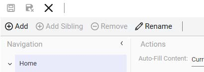
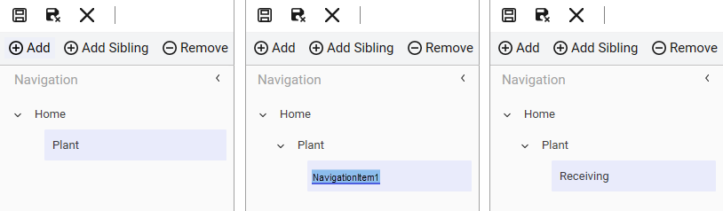
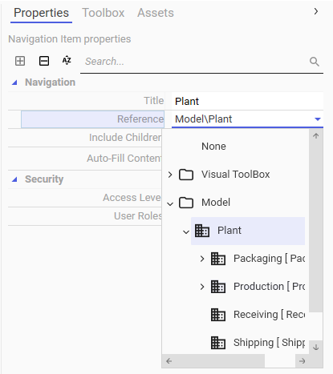
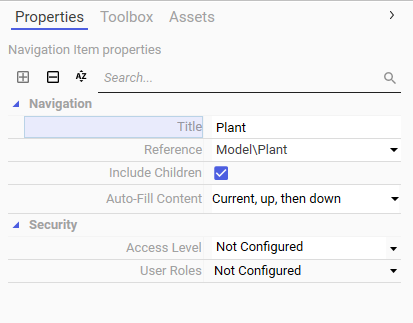
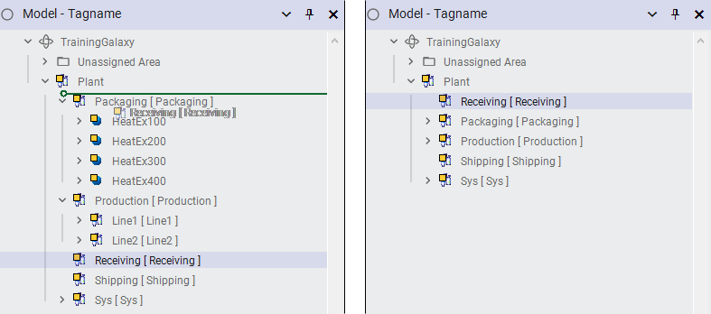
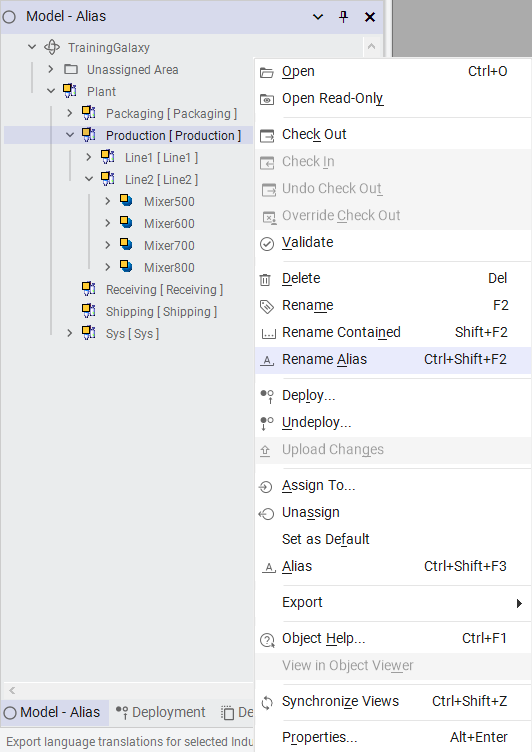

Module 4 — ViewApp Customizations | Pages 327-334

Section 3 – Custom Navigation
Section 3 – Custom Navigation
Introduction
A ViewApp provides built-in navigation, which can be customized to give users the ability to view
specific types of content associated with each navigation item.
In the ViewApp Editor, you can configure a custom navigation item to reference items in the Model
view hierarchy (plant model) or the Visual ToolBox hierarchy (Graphics tab). The navigation item
will replicate the hierarchy of the referenced items. During runtime, the ViewApp will display
associated content from the custom navigation item and its referencing hierarchy according to
auto-fill settings.
You can also configure the custom navigation item to be associated with one or more specific
content items, by assigning the content items to the associated layout panes.
Or, you can assign a different layout to selected custom navigation items and then associate
content to each pane of that layout. During runtime, when the custom navigation item is selected in
the ViewApp, the associated layout displays associated content in each pane.
Custom Navigation Commands
The ViewApp Editor includes commands for customizing the Navigation model for a ViewApp.
Add: Adds a custom navigation item as a child of the selected item in the Navigation
model.
Add Sibling: Adds a custom navigation item as a sibling of the selected item in the
Navigation model. Sibling items are at the same level within a navigation hierarchy. In the
default Navigation model, a sibling item cannot be added to the root (Home).
Remove: Removes the selected custom navigation item and all child items beneath it in
the navigation hierarchy. In the default Navigation model, the root (Home) cannot be
removed.
Rename: Makes the custom navigation item name editable in the Navigation model. In the
default Navigation model, Home and Assets can also be renamed.
This section describes how to customize the built-in navigation in a ViewApp.

Add Navigation Items
Custom child navigation items can be added to the Navigation model by selecting a navigation
item and clicking Add. The new item is added as a child item to the selected item.
For example, to add a navigation item as a child of a navigation item named Plant, select Plant
and click Add. An item is added to the Navigation model as a child of Plant. The name is editable,
so you can click the name and enter a new name. The following example shows adding a child
navigation under Plant and naming it Receiving.
By default, the Add command is not available for navigation items that reference an asset from the
Model hierarchy (plant model) or a toolset in the Visual ToolBox hierarchy (Graphics tab). For
example, when the default built-in Assets navigation item is selected, the Add command is
disabled. You cannot add child navigation items to Assets.
Add Sibling Navigation Items
Custom sibling navigation items can be added to the Navigation model by selecting a navigation
item at the same level as the item you want to add and clicking Add Sibling. The new item is added
at the same level as the selected item.
Note that the Add Sibling command is not available when the root (Home) item is selected. You
cannot add sibling navigation items to the root of the navigation hierarchy shown in the ViewApp
Editor.
Remove Navigation Items
Custom navigation items can be removed from the Navigation model by selecting the item to
remove and clicking Remove. The selected custom navigation item and any child items beneath it
are removed.
The Remove command is not available when a child navigation item is selected if its parent
navigation item references an asset from the Model hierarchy (plant model) or a toolset in the
Visual ToolBox hierarchy (Graphics tab). However, the parent navigation item can be removed,
which will remove the parent item and all its child items.
For example, consider the default built-in navigation item Assets, which references the Model view
hierarchy. When a child navigation item beneath Assets is selected, the Remove command is not
available. However, when Assets is selected, the Remove command is available. Clicking Remove
removes the Assets item and all its child items. The Home item remains in the list. It is the root of
the navigation hierarchy shown in the ViewApp Editor and cannot be removed.
Section 3 – Custom Navigation
Rearrange Navigation Items
Custom navigation items can be rearranged in the Navigation list by dragging and dropping as
needed.
Navigation Item Properties
Each navigation item in the Navigation model contains properties that define the item. With a
navigation item selected, properties for that item appear on the right side of the ViewApp Editor.
Properties include navigation-specific and security properties.
Navigation Property
Description
Title
Display name of the selected custom navigation item.
If you are configuring the Title property and the Reference property, configure
Reference first. If you configure Title before configuring Reference, the Title
property will be overwritten by the selected reference name.
Note that if a navigation item is replicated from the plant model and the
referenced object has an alias assigned, the Title property uses the alias
name of the referenced object.
Reference
Full path of the item in the Model (plant model) or Visual ToolBox (Graphics
tab) hierarchy.
Include Children
This property becomes available if the item selected for Reference is an asset
from the Model view that has its own hierarchy. It determines whether the
referenced asset item will include its child items in the Navigation list.
Checking this property will replicate that hierarchy beneath the navigation
item being configured. Unchecking this property will not include the child
items of the referenced asset. This property is checked by default.
Auto-Fill Content
Auto-Fill content mode of the selected navigation item to determine its
navigation behaviors. It includes a drop-down list of Auto-Fill options, which
are the same as the options for the Auto-Fill Content field in the Actions view.
Refer to Module 2 for more information about Auto-Fill Content options.
Security Property
Description
Access Level
Security access level assigned to the selected navigation item. Can be a
value between -1 and 9999. Refer to Module 8 for more information.
User Roles
User role(s) assigned to the selected navigation item. At runtime, if the
logged-in user has been assigned one or more of the selected roles, the
navigation item will be visible to that user. If set to “not configured,” the
navigation item will be available to any user, even if they are not logged in to
the running ViewApp.
If both Access Level and User Roles are configured, then both conditions
must be satisfied for the navigation item to be visible to the logged-in user at
runtime.

Navigation Item References
One of the properties for a Navigation item is Reference, which is the full path referenced by the
item in the Navigation model hierarchy. To configure the Reference property, click the down-arrow
to the right of the Reference field. You can configure a reference to an asset from the Model
hierarchy (plant model) or to a specific toolset from the Graphics tab.
To have the navigation item reference an asset in the Galaxy, click the down-arrow for the
Reference field. The objects shown reflect the plant model and you can expand the hierarchy to
make a selection. The following example shows Plant selected.

Section 3 – Custom Navigation
The value of the Reference property changes to show the full path of the selected reference and
the Title field changes accordingly. The Include Children property becomes available and is
checked by default, if the reference selected for the Reference property has its own hierarchy in
the Model view.
If the selected reference for a navigation item has its own hierarchy in Model view, that hierarchy
will be replicated beneath the navigation item being configured. The hierarchy will reflect the order
of the instances as listed in the plant model.
To have the navigation item reference an item in the Graphics tab, expand Visual ToolBox and
select the item. The items shown reflect toolsets from the Graphics tab, such as the Industrial
Graphic Library, the Situational Awareness Library, and custom toolsets.
Updating Objects in Model View for ViewApp Navigation
When a navigation item in the ViewApp is configured with a reference to an asset from the Model
view hierarchy (plant model), and it has its own hierarchy, the child items are replicated in the
navigation model and they are not editable within the ViewApp Editor.
To update the referenced model hierarchy, you can perform the following operations in the Model
view:
Rearranging Objects: In the Model view, by default, objects are organized in alphabetic
order based on their names within the same level of the hierarchy. For navigation purpose,
objects can be rearranged to more closely resemble the functional organization of different
components in the production process. When the hierarchy is referenced by a navigation
item in the ViewApp, the updated Model hierarchy is used for the navigation model.
When you drag an object to move it up or down in the Model view, a green line indicator
appears to show the new position where the object can be dropped. You need to make
sure that the indicator displays in the desired position before dropping the object.


Otherwise, you may inadvertently assign the object being moved to another object. The
following example shows moving the Receiving object to the first item listed under Plant.
Assigning Alias Names to Objects: Each object in the Model view can be assigned an
alias name, which is a string. It will be used as the default Title of the navigation item that
references the object in the ViewApp. It does not provide another way to address items in
the navigation model of a ViewApp. The alias name cannot be used to reference an object
or its attributes in scripts and animations. You must still reference an object based on its
unique object name or hierarchical name.
You can assign or update the alias name for an object in the Model view. For example,
you can right-click an object and select Rename Alias. You can toggle the Model view to
display the objects by their tag names or alias names.
Section 3 – Custom Navigation
The AliasName attribute is available for objects. It is a read-only attribute that stores the
alias name string specified for an object. Note that assigning an alias name starting with
an underscore hides the object from the navigation model.
To rearrange the objects in the model hierarchy or change the object alias name, the objects must
be undeployed first. After updating the objects in the Model view, the referenced items will be
updated accordingly in the ViewApp, and you can view and test before redeploying any objects.
For more information about rearranging objects in the Model view and assigning alias name to an
object, please refer to the Application Server User Guide.
Associate Content to Custom Navigation Items
A custom navigation item can be associated with one or more specific content items by manually
assigning the content items to panes of the assigned layout. In the ViewApp Editor, you can select
a specific content item from the Toolbox or Assets tabs and drag and drop the content on the
pane.
Or, the custom navigation item can be associated with a different layout, so that when that
navigation item is selected at runtime, the associated layout and panes display all associated
content of the navigation item, based on auto-fill settings and available panes in the layout. In the
ViewApp Editor, with a custom navigation item selected, you can change the assigned layout to
each screen of the associated screen profile by selecting available layouts.
Review the key concepts section above for the core topics discussed.
Consider how the concepts in this lesson fit into the broader System Platform and OMI framework.